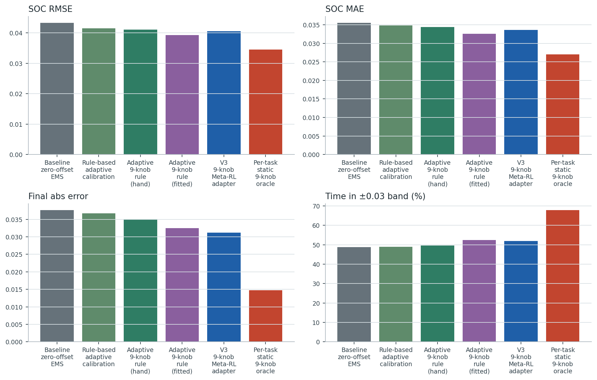

executed
5. Main Experiment
일반/heldout 조건에서 baseline behavior를 보존하면서 stress/OOD에서 SOC robustness 개선 여부를 확인.
heldout nominal 기준 confidence_gate_current SOC tail risk=n/a, baseline=0.11556.

pending_full_run
5b. Residual Rule DP V2
adaptive_rule_calibration을 deployable base로 두고 Meta-RL은 작은 residual만 학습했을 때 OOD/stress tail metric이 유의하게 개선되는지 확인.
V2 training/evaluation result root has not been attached yet.

executed
6. Non-Inferiority
nominal 주행에서 SOC가 고정 기준 SOC_ref_base에 가까운지와 fuel/switch/constraint guardrail을 넘지 않는지 확인.
guardrail 4/7 passed for confidence_gate_current under heldout_nominal.

executed
7. Stress/OOD Robustness
low SOC, high mass, uphill, weather/friction shift에서 tail risk와 constraint 변화를 본다.
ood_stress SOC tail risk baseline=0.23400, gate_current=n/a.

diagnostic_executed_full_retrain_pending
8. Weather-In-Training
weather-diverse meta-training이 heldout weather 적응을 개선하는지 확인해야 한다.
이번 suite는 생성된 dry/wet/heavy_rain/snow/ice profile 위에서 기존 dry/canonical-trained 정책을 재평가했다. weather-augmented 5-seed retraining은 별도 장기 run으로 남겨야 한다.

executed
9. Weather-Heldout Confidence
학습에서 충분히 보지 못한 weather/friction shift에서 confidence가 낮아지고 baseline-like behavior로 보수화되는지 확인.
confidence_gate_current mean confidence nominal=n/a, ood_weather=n/a.

executed
10. Confidence Gate Ablation
no-gate, current bound, wider bound를 비교해 gate가 개입량/안전성을 어떻게 바꾸는지 확인.
heldout nominal fallback ratio current=n/a, wider=n/a.
posthoc_mask_executed_retrained_ablation_pending
11. Raw/Summary Encoder Ablation
raw history는 transient 변화, summary는 task-level 안정성을 담당하는지 확인.
이번 결과는 retraining ablation이 아니라 trained raw+summary policy의 inference-time branch masking 진단이다. 논문 본문용 강한 claim에는 raw_only/summary_only 재학습이 추가로 필요하다.

executed_partial
12. Simpler Baseline Comparison
fixed retuned EMS와 hand-designed adaptive calibration보다 Meta-RL이 stress/OOD 적응에 유리한지 확인.
fixed retuned, conservative SOC-ref rule, rule-based adaptive calibration을 같은 manifest에서 실행했다. contextual SAC/supervised predictor/ECMS-like baseline은 다음 장기 비교군으로 남는다.
diagnostic_executed
13. EMS Variant Generalization
다른 map/rule EMS calibration variant에서도 adapter가 같은 경향을 유지하는지 확인.
conservative/aggressive engine-on map, SOC_ref, hysteresis, min timer 변형에서 재학습 없이 transfer 평가했다. 이 결과 전에는 any-EMS claim은 금지한다.

included_existing_executed_result
14. DP/Oracle Reference
adapter가 동일 권한 bounded-offset DP oracle 개선 여지를 얼마나 회수하는지 확인.
기존 bounded-offset DP와 full power-split diagnostic DP 결과를 suite에 연결했다. full split DP는 deployable controller가 아니라 offline diagnostic upper reference다.

executed
15. Domain Breakdown
EPA/NGSIM/commercial/SUMO/weather/stress domain별로 결과를 분리해 SUMO-only claim을 피한다.
domain groups evaluated: 6.
evaluation clarification
SOC-to-reference tracking
Final SOC 자체가 높거나 낮은지는 주 평가 기준이 아니다. 모든 controller는 고정 기준 `SOC_ref_base`에 대해 전체 episode 동안 얼마나 가까웠는지로 평가한다.
`delta_SOC_ref`로 움직인 adapted reference를 기준으로 평가하면 controller가 target을 움직여 평가를 속일 수 있으므로, 논문용 metric은 fixed baseline reference에 대한 `SOC_RMSE`, `SOC_MAE`, `abs_final_SOC_error`, `time-in-band`를 사용한다.

| split | controller | SOC RMSE | SOC MAE | mean signed error | final abs error | time in ±0.03 % | time in ±0.06 % |
|---|---|---|---|---|---|---|---|
| heldout_nominal | Adaptive 9-knob rule (fitted) | 0.03928 | 0.03254 | -0.00205 | 0.03253 | 52.50000 | 88.07292 |
| heldout_nominal | Adaptive 9-knob rule (hand) | 0.04103 | 0.03442 | -0.00127 | 0.03506 | 49.58333 | 84.68750 |
| heldout_nominal | Rule-based adaptive calibration | 0.04151 | 0.03482 | 0.00098 | 0.03672 | 48.95833 | 84.01042 |
| heldout_nominal | Global static 9-knob tuned | 0.04888 | 0.04174 | 0.01358 | 0.05596 | 41.97917 | 69.58333 |
| heldout_nominal | Baseline zero-offset EMS | 0.04327 | 0.03551 | -0.00794 | 0.03759 | 48.80208 | 81.30208 |
| heldout_nominal | Per-task static 9-knob oracle | 0.03451 | 0.02705 | -0.01379 | 0.01470 | 67.76042 | 88.85417 |
| heldout_nominal | V3 9-knob Meta-RL adapter | 0.04059 | 0.03364 | -0.00501 | 0.03116 | 51.94792 | 85.31250 |
| meta_validation | Adaptive 9-knob rule (fitted) | 0.04784 | 0.03838 | -0.01648 | 0.03933 | 48.22917 | 78.12500 |
| meta_validation | Adaptive 9-knob rule (hand) | 0.04899 | 0.03930 | -0.01562 | 0.04987 | 46.30208 | 76.77083 |
| meta_validation | Rule-based adaptive calibration | 0.04930 | 0.03991 | -0.01790 | 0.04186 | 45.78125 | 76.66667 |
| meta_validation | Global static 9-knob tuned | 0.04869 | 0.03918 | -0.00900 | 0.05279 | 47.34375 | 74.37500 |
| meta_validation | Baseline zero-offset EMS | 0.05309 | 0.04341 | -0.02247 | 0.05267 | 43.07292 | 73.28125 |
| meta_validation | Per-task static 9-knob oracle | 0.03948 | 0.03044 | -0.01418 | 0.02118 | 66.14583 | 82.60417 |
| meta_validation | V3 9-knob Meta-RL adapter | 0.04908 | 0.03969 | -0.01941 | 0.04188 | 46.57292 | 76.58333 |
| ood_hidden | Adaptive 9-knob rule (fitted) | 0.04789 | 0.03986 | -0.03463 | 0.02876 | 46.68403 | 77.06597 |
| ood_hidden | Adaptive 9-knob rule (hand) | 0.04724 | 0.03910 | -0.03363 | 0.03010 | 48.75000 | 77.91667 |
| ood_hidden | Rule-based adaptive calibration | 0.04852 | 0.04068 | -0.03599 | 0.02919 | 45.92014 | 76.40625 |
| ood_hidden | Global static 9-knob tuned | 0.04910 | 0.03969 | -0.02938 | 0.03478 | 49.65278 | 75.90278 |
| ood_hidden | Baseline zero-offset EMS | 0.05150 | 0.04365 | -0.03984 | 0.03384 | 40.52083 | 73.22917 |
| ood_hidden | Per-task static 9-knob oracle | 0.04383 | 0.03413 | -0.02964 | 0.01343 | 58.02083 | 80.52083 |
| ood_hidden | V3 9-knob Meta-RL adapter | 0.04889 | 0.04085 | -0.03576 | 0.03449 | 46.60417 | 75.71181 |
| ood_stress | Adaptive 9-knob rule (fitted) | 0.04797 | 0.03674 | -0.02562 | 0.03393 | 57.79514 | 79.98264 |
| ood_stress | Adaptive 9-knob rule (hand) | 0.04769 | 0.03635 | -0.02295 | 0.03443 | 57.95139 | 81.11111 |
| ood_stress | Rule-based adaptive calibration | 0.04965 | 0.03843 | -0.02725 | 0.03413 | 54.70486 | 79.32292 |
| ood_stress | Global static 9-knob tuned | 0.04722 | 0.03519 | -0.01528 | 0.02585 | 58.64583 | 82.22222 |
| ood_stress | Baseline zero-offset EMS | 0.05263 | 0.04094 | -0.03155 | 0.03263 | 51.40625 | 76.87500 |
| ood_stress | Per-task static 9-knob oracle | 0.04041 | 0.02859 | -0.01382 | 0.00724 | 70.59028 | 89.16667 |
| ood_stress | V3 9-knob Meta-RL adapter | 0.04914 | 0.03788 | -0.02741 | 0.03296 | 56.05903 | 79.52431 |
| ood_weather | Adaptive 9-knob rule (fitted) | 0.06570 | 0.05468 | -0.05194 | 0.05543 | 35.32986 | 59.61806 |
| ood_weather | Adaptive 9-knob rule (hand) | 0.06569 | 0.05495 | -0.05199 | 0.05644 | 34.51389 | 59.65278 |
| ood_weather | Rule-based adaptive calibration | 0.06610 | 0.05532 | -0.05294 | 0.05616 | 34.54861 | 58.94097 |
| ood_weather | Global static 9-knob tuned | 0.06531 | 0.05463 | -0.04859 | 0.05882 | 34.98264 | 60.19097 |
| ood_weather | Baseline zero-offset EMS | 0.06803 | 0.05726 | -0.05561 | 0.06254 | 31.64931 | 57.01389 |
| ood_weather | Per-task static 9-knob oracle | 0.06263 | 0.05116 | -0.04788 | 0.03873 | 39.84375 | 62.76042 |
| ood_weather | V3 9-knob Meta-RL adapter | 0.06655 | 0.05577 | -0.05369 | 0.05889 | 34.18056 | 58.30903 |
핵심 metric table
각 controller group은 seed 평균이며, baseline rule controller는 seed가 하나다.
| split | controller | SOC tail | SOC RMSE | SOC MAE | time in ±0.03 % | constraint | SOC-corr fuel | confidence |
|---|---|---|---|---|---|---|---|---|
| heldout_nominal | Adaptive 9-knob rule (fitted) | 0.09021 | 0.03928 | 0.03254 | 52.50000 | 0.12500 | 0.11495 | 1.00000 |
| heldout_nominal | Adaptive 9-knob rule (hand) | 0.10195 | 0.04103 | 0.03442 | 49.58333 | 0.25000 | 0.11415 | 1.00000 |
| heldout_nominal | Rule-based adaptive calibration | 0.10395 | 0.04151 | 0.03482 | 48.95833 | 0.12500 | 0.11462 | 1.00000 |
| heldout_nominal | Global static 9-knob tuned | 0.15643 | 0.04888 | 0.04174 | 41.97917 | 0.00000 | 0.11476 | 1.00000 |
| heldout_nominal | Baseline zero-offset EMS | 0.11556 | 0.04327 | 0.03551 | 48.80208 | 0.12500 | 0.11384 | 1.00000 |
| heldout_nominal | Per-task static 9-knob oracle | 0.07375 | 0.03451 | 0.02705 | 67.76042 | 0.12500 | 0.11342 | 1.00000 |
| heldout_nominal | V3 9-knob Meta-RL adapter | 0.10153 | 0.04059 | 0.03364 | 51.94792 | 0.32500 | 0.11481 | 0.70588 |
| meta_validation | Adaptive 9-knob rule (fitted) | 0.16933 | 0.04784 | 0.03838 | 48.22917 | 0.00000 | 0.07175 | 1.00000 |
| meta_validation | Adaptive 9-knob rule (hand) | 0.18180 | 0.04899 | 0.03930 | 46.30208 | 0.00000 | 0.07125 | 1.00000 |
| meta_validation | Rule-based adaptive calibration | 0.17843 | 0.04930 | 0.03991 | 45.78125 | 0.00000 | 0.07148 | 1.00000 |
| meta_validation | Global static 9-knob tuned | 0.18141 | 0.04869 | 0.03918 | 47.34375 | 0.00000 | 0.07160 | 1.00000 |
| meta_validation | Baseline zero-offset EMS | 0.23091 | 0.05309 | 0.04341 | 43.07292 | 0.00000 | 0.07123 | 1.00000 |
| meta_validation | Per-task static 9-knob oracle | 0.13557 | 0.03948 | 0.03044 | 66.14583 | 0.00000 | 0.07224 | 1.00000 |
| meta_validation | V3 9-knob Meta-RL adapter | 0.18124 | 0.04908 | 0.03969 | 46.57292 | 0.00000 | 0.07199 | 0.73344 |
| ood_hidden | Adaptive 9-knob rule (fitted) | 0.17900 | 0.04789 | 0.03986 | 46.68403 | 1.08333 | 0.13959 | 1.00000 |
| ood_hidden | Adaptive 9-knob rule (hand) | 0.17559 | 0.04724 | 0.03910 | 48.75000 | 0.91667 | 0.13936 | 1.00000 |
| ood_hidden | Rule-based adaptive calibration | 0.18639 | 0.04852 | 0.04068 | 45.92014 | 0.87500 | 0.13914 | 1.00000 |
| ood_hidden | Global static 9-knob tuned | 0.18871 | 0.04910 | 0.03969 | 49.65278 | 1.66667 | 0.13893 | 1.00000 |
| ood_hidden | Baseline zero-offset EMS | 0.21099 | 0.05150 | 0.04365 | 40.52083 | 0.91667 | 0.13885 | 1.00000 |
| ood_hidden | Per-task static 9-knob oracle | 0.15687 | 0.04383 | 0.03413 | 58.02083 | 0.33333 | 0.14048 | 1.00000 |
| ood_hidden | V3 9-knob Meta-RL adapter | 0.18964 | 0.04889 | 0.04085 | 46.60417 | 1.01667 | 0.13947 | 0.69086 |
| ood_stress | Adaptive 9-knob rule (fitted) | 0.19578 | 0.04797 | 0.03674 | 57.79514 | 1.33333 | 0.19572 | 1.00000 |
| ood_stress | Adaptive 9-knob rule (hand) | 0.19227 | 0.04769 | 0.03635 | 57.95139 | 1.00000 | 0.19546 | 1.00000 |
| ood_stress | Rule-based adaptive calibration | 0.20983 | 0.04965 | 0.03843 | 54.70486 | 1.45833 | 0.19481 | 1.00000 |
| ood_stress | Global static 9-knob tuned | 0.18187 | 0.04722 | 0.03519 | 58.64583 | 1.29167 | 0.19499 | 1.00000 |
| ood_stress | Baseline zero-offset EMS | 0.23400 | 0.05263 | 0.04094 | 51.40625 | 1.33333 | 0.19480 | 1.00000 |
| ood_stress | Per-task static 9-knob oracle | 0.14308 | 0.04041 | 0.02859 | 70.59028 | 0.95833 | 0.19608 | 1.00000 |
| ood_stress | V3 9-knob Meta-RL adapter | 0.20677 | 0.04914 | 0.03788 | 56.05903 | 1.36667 | 0.19506 | 0.63136 |
| ood_weather | Adaptive 9-knob rule (fitted) | 0.37410 | 0.06570 | 0.05468 | 35.32986 | 0.00000 | 0.05331 | 1.00000 |
| ood_weather | Adaptive 9-knob rule (hand) | 0.37419 | 0.06569 | 0.05495 | 34.51389 | 0.00000 | 0.05315 | 1.00000 |
| ood_weather | Rule-based adaptive calibration | 0.38171 | 0.06610 | 0.05532 | 34.54861 | 0.00000 | 0.05302 | 1.00000 |
| ood_weather | Global static 9-knob tuned | 0.37125 | 0.06531 | 0.05463 | 34.98264 | 0.00000 | 0.05265 | 1.00000 |
| ood_weather | Baseline zero-offset EMS | 0.40012 | 0.06803 | 0.05726 | 31.64931 | 0.00000 | 0.05269 | 1.00000 |
| ood_weather | Per-task static 9-knob oracle | 0.34545 | 0.06263 | 0.05116 | 39.84375 | 0.00000 | 0.05271 | 1.00000 |
| ood_weather | V3 9-knob Meta-RL adapter | 0.38595 | 0.06655 | 0.05577 | 34.18056 | 0.00000 | 0.05317 | 0.56691 |
Non-inferiority guardrail 판정
| metric | improvement % | margin % | pass |
|---|---|---|---|
| SOC_corrected_fuel_kg | -0.09901 | -2.00000 | True |
| engine_switch_count | n/a | -10.00000 | False |
| constraint_violation_steps | n/a | -5.00000 | False |
| SOC_RMSE | 0.62620 | -5.00000 | True |
| SOC_MAE_to_ref | 1.68688 | -5.00000 | True |
| time_in_SOC_band_0p03_pct | 9.21006 | -5.00000 | True |
| abs_final_SOC_error | -139.41167 | -5.00000 | False |
Domain breakdown table
| domain | controller | n | SOC tail | SOC RMSE | constraint |
|---|---|---|---|---|---|
| sumo_arterial_mixed | adaptive_rule_calibration | 2 | 0.19853 | 0.04544 | 0.00000 |
| sumo_arterial_mixed | map_rule_zero_offset | 2 | 0.18308 | 0.04661 | 0.00000 |
| sumo_arterial_mixed | per_task_static_oracle | 2 | 0.07466 | 0.03199 | 0.00000 |
| sumo_arterial_mixed | v3_meta_rl | 10 | 0.14082 | 0.04217 | 0.20000 |
| sumo_freeway_cruise | adaptive_rule_calibration | 2 | 0.02907 | 0.03063 | 0.00000 |
| sumo_freeway_cruise | map_rule_zero_offset | 2 | 0.03249 | 0.03120 | 0.00000 |
| sumo_freeway_cruise | per_task_static_oracle | 2 | 0.01038 | 0.02235 | 0.00000 |
| sumo_freeway_cruise | v3_meta_rl | 10 | 0.05620 | 0.03409 | 0.00000 |
| sumo_selected | adaptive_rule_calibration | 82 | 0.20059 | 0.05002 | 0.69512 |
| sumo_selected | map_rule_zero_offset | 82 | 0.22127 | 0.05230 | 0.67073 |
| sumo_selected | per_task_static_oracle | 82 | 0.14888 | 0.04254 | 0.39024 |
| sumo_selected | v3_meta_rl | 410 | 0.19684 | 0.04957 | 0.72927 |
| sumo_suburban_cruise | adaptive_rule_calibration | 2 | 0.06909 | 0.03892 | 0.00000 |
| sumo_suburban_cruise | map_rule_zero_offset | 2 | 0.04472 | 0.03409 | 1.00000 |
| sumo_suburban_cruise | per_task_static_oracle | 2 | 0.00209 | 0.01880 | 0.00000 |
| sumo_suburban_cruise | v3_meta_rl | 10 | 0.06450 | 0.03683 | 0.50000 |
| sumo_urban_stop_go | adaptive_rule_calibration | 2 | 0.28686 | 0.05720 | 0.00000 |
| sumo_urban_stop_go | map_rule_zero_offset | 2 | 0.29260 | 0.05786 | 0.00000 |
| sumo_urban_stop_go | per_task_static_oracle | 2 | 0.27182 | 0.05787 | 0.00000 |
| sumo_urban_stop_go | v3_meta_rl | 10 | 0.28964 | 0.05816 | 0.00000 |
| sumo_weather | adaptive_rule_calibration | 30 | 0.34641 | 0.06270 | 0.00000 |
| sumo_weather | map_rule_zero_offset | 30 | 0.38295 | 0.06638 | 0.00000 |
| sumo_weather | per_task_static_oracle | 30 | 0.31506 | 0.05935 | 0.00000 |
| sumo_weather | v3_meta_rl | 150 | 0.35066 | 0.06309 | 0.00000 |